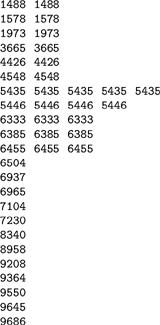

C++ Programming Robert Sedgewick - Princeton University Addison Wesley Professional Algorithms in C++, Parts 1–4: Fundamentals, Data Structure, Sorting, Searching, Third Edition C++ Programming Robert Sedgewick - Princeton University Addison Wesley Professional Algorithms in C++, Parts 1–4: Fundamentals, Data Structure, Sorting, Searching, Third Edition
2.6. Examples of Algorithm Analysis
Armed with the tools outlined in the previous three sections, we now consider the analysis of sequential search and binary search, two basic algorithms for determining whether or not any of a sequence of objects appears among a set of previously stored objects. Our purpose is to illustrate the manner in which we will compare algorithms, rather than to describe these particular algorithms in detail. For simplicity, we assume here that the objects in question are integers. We will consider more general applications in great detail in Chapters 12 through 16. The simple versions of the algorithms that we consider here not only expose many aspects of the algorithm design and analysis problem, but also have many direct applications.
For example, we might imagine a credit-card company that has N credit risks or stolen credit cards, and that wants to check whether any of M given transactions involves any one of the N bad numbers. To be concrete, we might think of N being large (say on the order of 103 to 106) and M being huge (say on the order of 106 to 109) for this application. The goal of the analysis is to be able to estimate the running times of the algorithms when the values of the parameters fall within these ranges.
Program 2.1 implements a straightforward solution to the search problem. It is packaged as a C++ function that operates on an array (see Chapter 3) for better compatibility with other code that we will examine for the same problem in Part 4, but it is not necessary to understand the details of the packaging to understand the algorithm: We store all the objects in an array; then, for each transaction, we look through the array sequentially, from beginning to end, checking each to see whether it is the one that we seek.
Program 2.1. Sequential search|
This function checks whether the number v is among a previously stored set of numbers in a[l], a[l+1], . . ., a[r], by comparing against each number sequentially, starting at the beginning. If we reach the end without finding the number sought, then we return the value -1. Otherwise, we return the index of the array position containing the number.
int search(int a[], int v, int l, int r)
{
for (int i = l; i <= r; i++)
if (v == a[i]) return i;
return -1;
}
|
To analyze the algorithm, we note immediately that the running time depends on whether or not the object sought is in the array. We can determine that the search is unsuccessful only by examining each of the N objects, but a search could end successfully at the first, second, or any one of the objects.
Therefore, the running time depends on the data. If all the searches are for the number that happens to be in the first position in the array, then the algorithm will be fast; if they are for the number that happens to be in the last position in the array, it will be slow. We discuss in Section 2.7 the distinction between being able to guarantee performance and being able to predict performance. In this case, the best guarantee that we can provide is that no more that N numbers will be examined.
To make a prediction, however, we need to make an assumption about the data. In this case, we might choose to assume that all the numbers are randomly chosen. This assumption implies, for example, that each number in the table is equally likely to be the object of a search. On reflection, we realize that it is that property of the search that is critical, because with randomly chosen numbers we would be unlikely to have a successful search at all (see Exercise 2.48). For some applications, the number of transactions that involve a successful search might be high; for other applications, it might be low. To avoid confusing the model with properties of the application, we separate the two cases (successful and unsuccessful) and analyze them independently. This example illustrates that a critical part of an effective analysis is the development of a reasonable model for the application at hand. Our analytic results will depend on the proportion of searches that are successful; indeed, it will give us information that we might need if we are to choose different algorithms for different applications based on this parameter.
Property 2.1. Sequential search examines N numbers for each unsuccessful search and about N/2 numbers for each successful search on the average|
If each number in the table is equally likely to be the object of a search, then
(1 + 2 + ... + N)/N= (N + 1)/2
is the average cost of a search.
|
Property 2.1 implies that the running time of Program 2.1 is proportional to N, subject to the implicit assumption that the average cost of comparing two numbers is constant. Thus, for example, we can expect that, if we double the number of objects, we double the amount of time required for a search.
We can speed up sequential search for unsuccessful search by putting the numbers in the table in order. Sorting the numbers in the table is the subject of Chapters 6 through 11. A number of the algorithms that we will consider get that task done in time proportional to N log N, which is insignificant by comparison to the search costs when M is huge. In an ordered table, we can terminate the search immediately on reaching a number that is larger than the one that we seek. This change reduces the cost of sequential search to about N/2 numbers examined for unsuccessful search, the same as for successful search.
Property 2.2. Sequential search in an ordered table examines N numbers for each search in the worst case and about N/2 numbers for each search on the average|
We still need to specify a model for unsuccessful search. This result follows from assuming that the search is equally likely to terminate at any one of the N + 1 intervals defined by the N numbers in the table, which leads immediately to the expression
(1 + 2 + . . . + N + N)/N = (N + 3)/2.
The cost of an unsuccessful search ending before or after the Nth entry in the table is the same: N.
|
Program 2.2. Binary search|
This program has the same functionality as Program 2.1, but it is much more efficient.
int search(int a[], int v, int l, int r)
{
while (r >= l)
{ int m = (l+r)/2;
if (v == a[m]) return m;
if (v < a[m]) r = m-1; else l = m+1;
}
return -1;
}
|
Another way to state the result of Property 2.2 is to say that the running time of sequential search is proportional to MN for M transactions, on the average and in the worst case. If we double either the number of transactions or the number of objects in the table, we can expect the running time to double; if we double both, we can expect the running time to go up by a factor of 4. The result also tells us that the method is not suitable for huge tables. If it takes c microseconds to examine a single number, then, for M = 109 and N = 106, the running time for all the transactions would be at least (c/2)109 seconds, or, by Figure 2.1, about 16c years, which is prohibitive.
Program 2.2 is a classical solution to the search problem that is much more efficient than sequential search. It is based on the idea that, if the numbers in the table are in order, we can eliminate half of them from consideration by comparing the one that we seek with the one at the middle position in the table. If it is equal, we have a successful search. If it is less, we apply the same method to the left half of the table. If it is greater, we apply the same method to the right half of the table. Figure 2.7 is an example of the operation of this method on a sample set of numbers.
To see whether or not 5025 is in the table of numbers in the left column, we first compare it with 6504; that leads us to consider the first half of the array. Then we compare against 4548 (the middle of the first half); that leads us to the second half of the first half. We continue, always working on a subarray that would contain the number being sought, if it is in the table. Eventually, we get a subarray with just 1 element, which is not equal to 5025, so 5025 is not in the table.

Property 2.3. Binary search never examines more than  lg N lg N + 1 numbers + 1 numbers
Property 2.3 allows us to solve a huge search problem with up to 1 million numbers with at most 20 comparisons per transaction, and that is likely to be less than the time it takes to read or write the number on many computers. The search problem is so important that several methods have been developed that are even faster than this one, as we shall see in Chapters 12 through 16.
Note that we express Property 2.1 and Property 2.2 in terms of the operations that we perform most often on the data. As we noted in the commentary following Property 2.1, we expect that each operation should take a constant amount of time, and we can conclude that the running time of binary search is proportional to lg N as compared to N for sequential search. As we double N, the running time of binary search hardly changes, but the running time of sequential search doubles. As N grows, the gap between the two methods becomes a chasm.
We can verify the analytic evidence of Properties 2.1 and 2.2 by implementing and testing the algorithms. For example, Table 2.4 shows running times for binary search and sequential search for M searches in a table of size N (including, for binary search, the cost of sorting the table) for various values of M and N. We will not consider the implementation of the program to run these experiments in detail here because it is similar to those that we consider in full detail in Chapters 6 and 11, and because we consider the use of library and external functions and other details of putting together programs from constituent pieces, including the sort function, in Chapter 3. For the moment, we simply stress that doing empirical testing is an integral part of evaluating the efficiency of an algorithm.
Table 2.4. Empirical study of sequential and binary searchThese relative timings validate our analytic results that sequential search takes time proportional to MN and binary search takes time proportional to M lg N for M searches in a table of N objects. When we increase N by a factor of 2, the time for sequential search increases by a factor of 2 as well, but the time for binary search hardly changes. Sequential search is infeasible for huge M as N increases, but binary search is fast even for huge tables. | | | M = 1000 | M = 10000 | M = 100000 | N | S | B | S | B | S | B | 125 | 1 | 1 | 13 | 2 | 130 | 20 | 250 | 3 | 0 | 25 | 2 | 251 | 22 | 500 | 5 | 0 | 49 | 3 | 492 | 23 | 1250 | 13 | 0 | 128 | 3 | 1276 | 25 | 2500 | 26 | 1 | 267 | 3 | | 28 | 5000 | 53 | 0 | 533 | 3 | | 30 | 12500 | 134 | 1 | 1337 | 3 | | 33 | 25000 | 268 | 1 | | 3 | | 35 | 50000 | 537 | 0 | | 4 | | 39 | 100000 | 1269 | 1 | | 5 | | 47 | Key:
S sequential search (Program 2.1)
|
B binary search (Program 2.2) |
 T
T 2 with T1 = 1:
2 with T1 = 1: